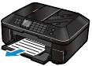
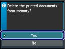

This section describes the preparation necessary for receiving a fax and how to receive a fax. This section also describes the operation to print documents stored in the machine's memory such as when ink or paper runs out.
Receiving a Fax Temporarily in the Machine's Memory (Memory Receiving)
Printing Documents in the Machine's Memory
(A) Prints a received fax.
See Receiving a Fax.
(B) Stores a received fax in the machine's memory without printing it.
See Receiving a Fax Temporarily in the Machine's Memory (Memory Receiving).
(C) Automatically saves a received fax on a memory card or USB flash drive.
For details, refer to the on-screen manual: Advanced Guide.
 Preparing for Receiving a Fax
Preparing for Receiving a FaxPrepare for receiving a fax according to the following procedure.
Make sure that the power is turned on.
See Operation Panel.
Make sure of the receive mode setting.
(1) Press the FAX button.
(2) Confirm the receive mode.
 Note Note
|
Load paper.
See Loading Paper in the Cassette.
When a fax is received, the machine feeds plain paper from the Cassette and prints on it.
| Note
For details, refer to the on-screen manual: Advanced Guide.
|
Specify the paper settings as necessary.
(1) Press the left Function button to select FAX menu.
(2) Select FAX paper settings , and press the OK button.
(3) Use the  or
or  button to select the page size.
button to select the page size.
| Note
|
(4) Select one-sided printing or two-sided printing.
Received faxes can be printed on both sides of the paper.
If 2-sided in 2-sidedPrintSetting is selected, press the right Function button to select Advanced, then select the side for stapling.
| Note
|
(5) Select the automatic feed switch.
ON: If plain paper of the same size is loaded in the Cassette and Rear Tray, the machine automatically switches to another paper source when one runs out of paper.
OFF: Paper will be fed from the Cassette only.
| Note
For details, refer to the on-screen manual: Advanced Guide. |
(6) Press the OK button.
Received faxes will be printed with the selected page size and printing method.
| Note
For details, refer to the on-screen manual: Advanced Guide. |
Receiving a FaxDepending on the selected receive mode, the receive operation varies.
For the receive mode, see Setting the Receive Mode.
 When TEL priority mode is selected:
When TEL priority mode is selected:When the call is a fax:
The telephone will ring when a call incomes.

(1) Pick up the handset. If you hear the fax tone, wait for at least 5 seconds after it stops, then hang up the handset.
The machine will receive the fax.


| Note
The number of times to ring the telephone until switching to fax reception can be changed. For details, refer to the on-screen manual: Advanced Guide. Other options
See Remote Reception. |
| Note When the answering machine is connected to the machine
After making this setting, we recommend that you call the answering machine using a mobile phone, etc. to confirm that messages are recorded successfully in the answering machine.
- The entire message should be no longer than 15 seconds. - In the message, tell your callers how to send a fax. |
When the call is a voice call:
The telephone will ring when a call incomes.


(1) Pick up the handset, and talk on the telephone.

| Note
|
When FAX only mode is selected:When the call is a fax.
The machine will receive the fax automatically.

| Note
Other options
|
When DRPD or Network switch is selected:When the call is a fax:
The telephone will ring when a call incomes.

The machine will receive the fax automatically when the fax ring pattern is detected.
| Note |
When the call is a voice call:
The telephone will ring when a call incomes.


When the machine does not detect the fax ring pattern, the telephone will continue ringing.
(1) Pick up the handset, and talk on the telephone.
| Note
Contact your telephone company for details. For DRPD
For details, see Setting the DRPD Ring Pattern (US and Canada only). For Network switch
|
Receiving a Fax Temporarily in the Machine's Memory (Memory Receiving)If the machine was not able to print a received fax, the machine stores the unprinted fax temporarily in its memory (memory receiving).
When a fax is stored in the memory, the FAX Memory lamp lights and the message "Received in memory." appears on the LCD.
 Important Important
|
If the machine receives a fax under one of the following conditions, the machine will automatically store the received fax in its memory.
The Machine Is Set to Store Received Documents in its MemoryTo store received documents in the machine's memory, select Do not print for Received documents in Auto print settings.
You can print the documents stored in the machine's memory from the Memory reference screen.
See Printing Documents in the Machine's Memory.
An Error Has Occurred on the MachineIf you select Print for Received documents in Auto print settings, a received fax will be printed automatically. However, if any of the following errors occurs, the received fax will not be printed. It will instead be stored in the machine's memory.
 The amount of remaining ink is insufficient to print a fax.
The amount of remaining ink is insufficient to print a fax.
The fax in the machine's memory will be automatically printed when a new ink tank is installed.
| Note Print when out of ink
If you notice that there is insufficient ink for printing faxes, select Do not print for Received documents in Auto print settings to store received faxes in the machine's memory until you replace the ink tank. After replacement, set Received documents back to Print. The received faxes in the machine's memory will then be printed automatically. |
Paper has run out.
Load the paper and press the OK button. The fax in memory will be automatically printed.
Make sure that A4, Letter, or Legal-sized plain paper is loaded in the Rear Tray, if the machine is set to automatically switch the paper source to the Rear Tray (Auto feed switch) when the paper in the Cassette has run out.
Paper of a size other than selected for Page size in the fax paper settings is loaded.
Load paper of the same size as selected for Page size, and press the OK button. The fax in memory will be automatically printed.
You Pressed the Stop Button to Cancel Printing of a FaxPress the FAX button to resume printing of the fax.
| Note
* When using ITU-T No.1 chart (Standard mode)
|
Printing Documents in the Machine's MemoryYou can print all documents received in the machine's memory at once or select a document for printing on the Memory reference screen. You can also save the documents on the memory card or USB flash drive.
This section describes the procedure to print all the received documents in the memory.
For details on Memory reference, refer to the on-screen manual: Advanced Guide.
| Note
|
Load paper.
See Loading Paper in the Cassette.
Here we make sure that A4 plain paper is loaded in the Cassette.
Specify the paper settings as necessary.
See Preparing for Receiving a Fax.
Display the Memory reference screen.
(1) Press the FAX button.
(2) Press the left Function button to select FAX menu.
(3) Select Memory reference, and press the OK button.
Print all the received documents in the memory.
(1) Select Print all received documents, and press the OK button.
| Note
|
(2) Select Yes, and press the OK button.
The machine starts printing documents in the memory one by one.
(3) To delete the printed document, select Yes.

To keep the document in the memory, select No.
(4) Press the OK button.
| Note
|